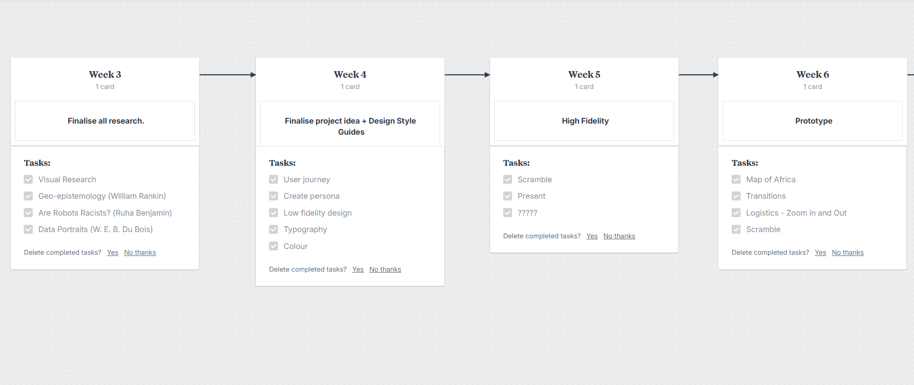
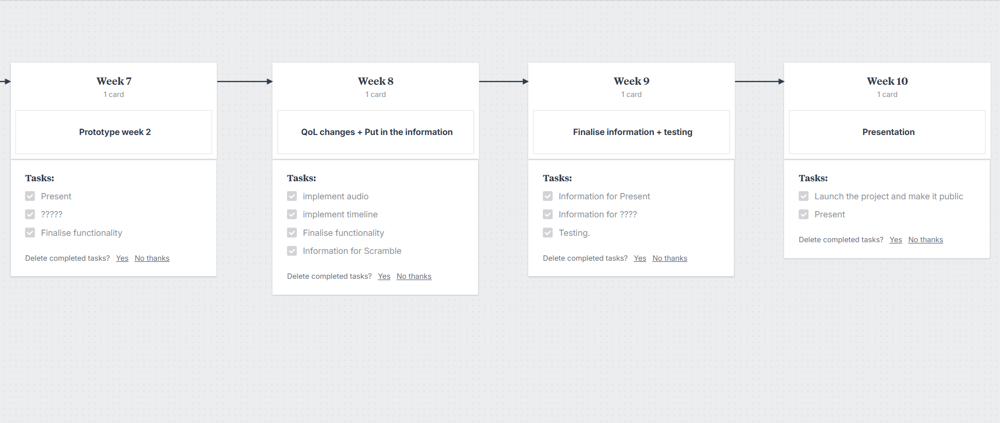
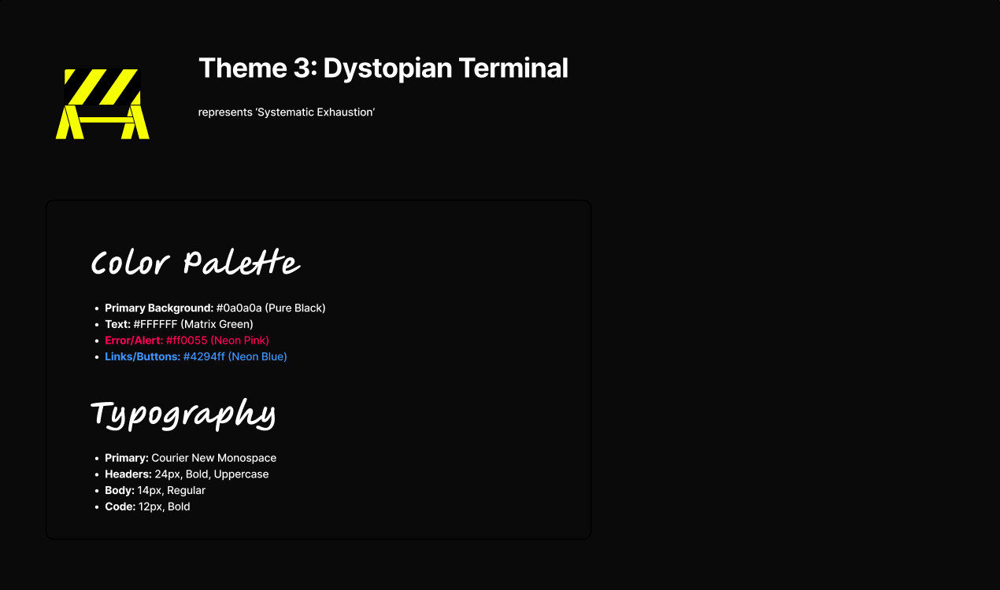
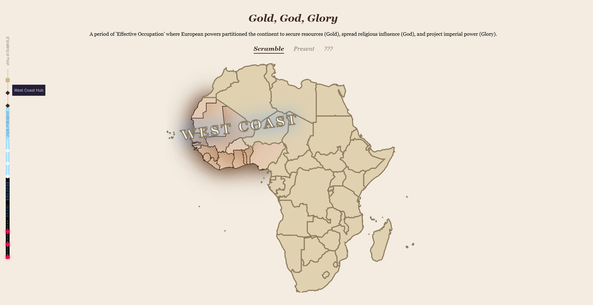
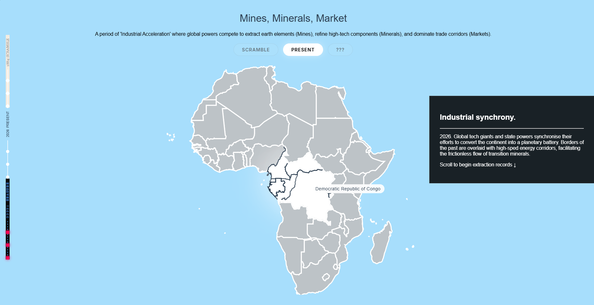
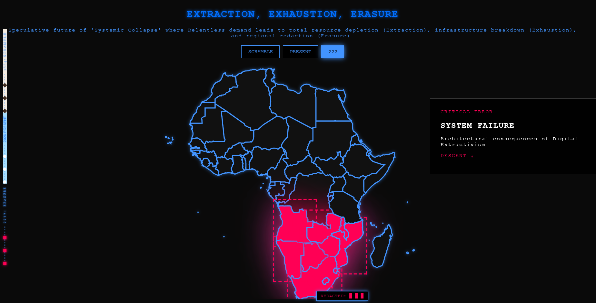
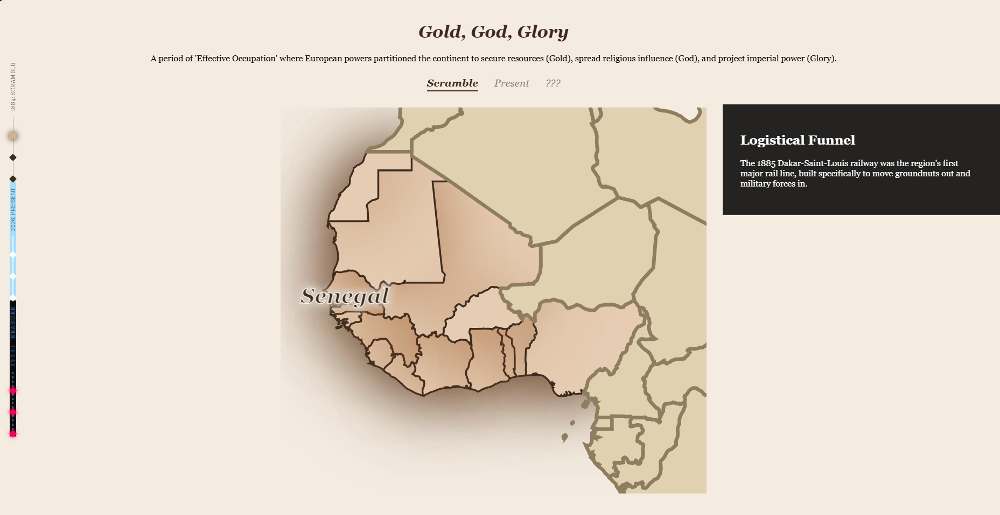
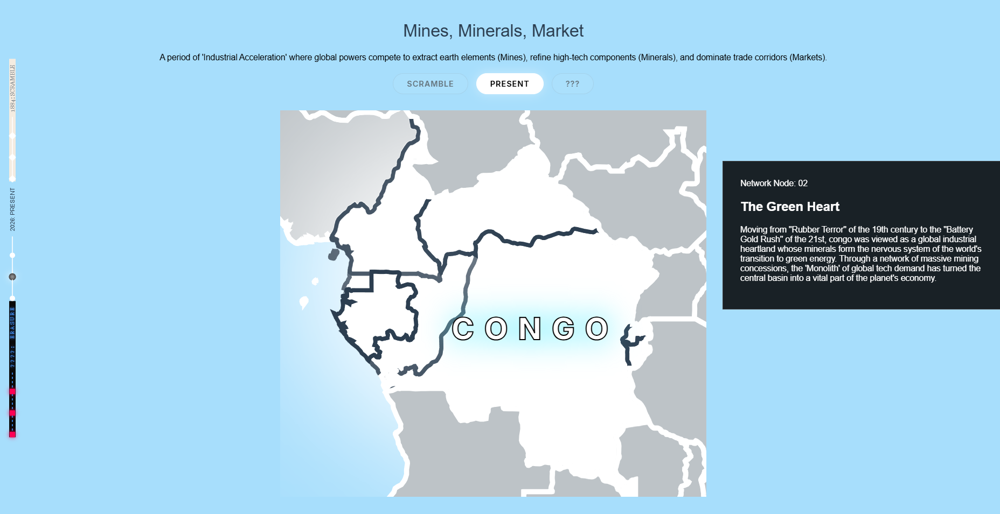
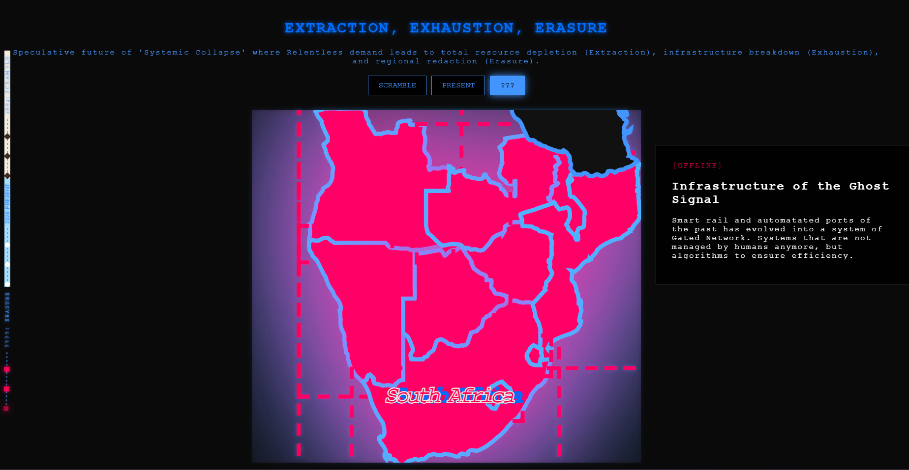

Early wireframes






I created an interactive visual essay that interrogates the continuity of colonialism in the digital age. The objective was to translate and link different eras of colonialism into a captivating, sensory-driven experience.
Once I decided on my topic, I showcased it through an interactive website, utilising tools such as HTML, CSS and JavaScript. Following the design I made on Figma
My first narrative-driven visual experience. Learnt a lot from this especially from a testing standpoint, constantly having to tweak and readjust in order to have a seamless user experience.
I conducted research by first analysing different types of visual essays to broaden my vie. Utilising websites such as Frieze, I was able to see great examples. Across stumbling on Louisana mapping portal, I was encapsulated by how the project is potrayed, both in terms of context and visual standpoint. I then conducted research on the Scramble of Africa in 1884, followed by present day exploitation of Africa. For further information, I have a blog dedicated to this project here
With the goal of having to dsplay my visual essay in the form of an interactive map, I had many different ways to approach this. Having the user zoom in to the relevant country of discussion, it remains their focus towhere I want it to be.
I decided to have different designs for each era to make the design feel real. I selected specific fonts and colours for each respective era, and used it throughout it's relevant section to maintain consistency. Each visuals have their own representation of colonialism such as the past mimicking the aesthetics of 10th century cartography, present representing the hard, cold metal and equipment used to mine the lands, and the "futuristic" era embodies technology.
Once finished, I had a peer test the prototype. They were given free reign to navigate around without my input. This was to simply spot any bugs or problems I didn't catch before. After that, I presented my work in front of an audience. Through this, I was able to pitch and showcase it with no problems. At the end of the presentation, I asked different questions regarding the prototype as whether leaving or adding something to this would better/worse this piece.








